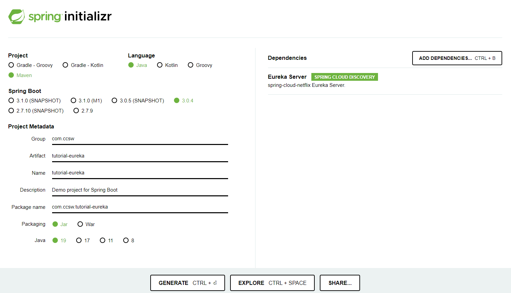
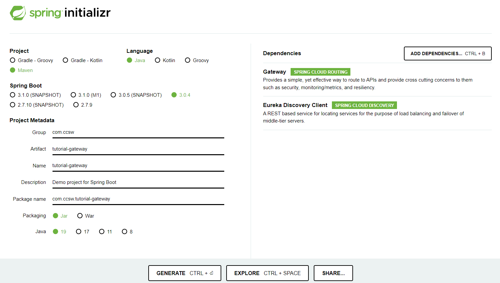
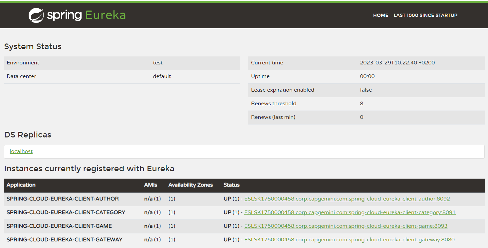

Infraestructura - Spring Cloud
Creados los tres micro servicios que compondrán nuestro aplicativo, ya podemos empezar con la creación de las piezas de infraestructura que serán las encargadas de realizar la orquestación.
Service Discovery - Eureka
Para esta pieza hay muchas aplicaciones de mercado, incluso los propios proveedores de cloud tiene la suya propia, pero en este caso, vamos a utilizar la que ofrece Spring Cloud, así que vamos a crear un proyecto de una forma similar a la que estamos acostumbrados.
Crear el servicio
Volviendo una vez más a Spring Initializr seleccionaremos los siguientes datos:
- Tipo de proyecto: Maven
- Lenguage: Java
- Versión Spring boot: 3.0.4 (o alguna similar)
- Group: com.ccsw
- ArtifactId: tutorial-eureka
- Versión Java: 19
- Dependencias: Eureka Server

Es importante que añadamos la dependencia de Eureka Server para que sea capaz de ejecutar el proyecto como si fuera un servidor Eureka.
Configurar el servicio
Importamos el proyecto dentro del IDE y ya solo nos queda activar el servidor y configurarlo.
En primer lugar, añadimos la anotación que habilita el servidor de Eureka.
package com.ccsw.tutorialeureka;
import org.springframework.boot.SpringApplication;
import org.springframework.boot.autoconfigure.SpringBootApplication;
import org.springframework.cloud.netflix.eureka.server.EnableEurekaServer;
@SpringBootApplication
@EnableEurekaServer
public class TutorialEurekaApplication {
public static void main(String[] args) {
SpringApplication.run(TutorialEurekaApplication.class, args);
}
}
Ahora debemos añadir las configuraciones necesarias. En primer lugar para facilitar la visualización de las propiedades vamos a renombrar nuestro fichero application.properties a application.yml.
Hecho esto, añadimos la configuración de puerto que ya conocemos y añadimos directivas sobre que Eureka no se registre a sí mismo dentro del catálogo de servicios.
server:
port: 8761
eureka:
client:
registerWithEureka: false
fetchRegistry: false
Probar el servicio
Hechas estas sencillas configuraciones y arrancando el proyecto, nos dirigimos a la http://localhost/8761 donde podemos ver la interfaz de Eureka y si miramos con detenimiento, vemos que el catálogo de servicios aparece vacío, ya que aún no se ha registrado ninguno de ellos.
Micro servicios
Ahora que ya tenemos disponible Eureka, ya podemos proceder a registrar nuestros micro servicios dentro del catálogo. Para ello vamos a realizar las mismas modificaciones sobre los tres micro servicios. Recuerda que hay que realizarlo sobre los tres para que se registren todos.
Configurar micro servicios
Para este fin debemos añadir una nueva dependencia dentro del pom.xml y modificar la configuración del proyecto.
<?xml version="1.0" encoding="UTF-8"?>
<project xmlns="http://maven.apache.org/POM/4.0.0" xmlns:xsi="http://www.w3.org/2001/XMLSchema-instance"
xsi:schemaLocation="http://maven.apache.org/POM/4.0.0 https://maven.apache.org/xsd/maven-4.0.0.xsd">
<modelVersion>4.0.0</modelVersion>
<parent>
<groupId>org.springframework.boot</groupId>
<artifactId>spring-boot-starter-parent</artifactId>
<version>3.0.4</version>
<relativePath/> <!-- lookup parent from repository -->
</parent>
<groupId>com.ccsw</groupId>
<artifactId>tutorial-XXX</artifactId> <!-- Cada proyecto tiene su configación propia, NO modificar -->
<version>0.0.1-SNAPSHOT</version>
<name>tutorial-XXX</name> <!-- Cada proyecto tiene su configación propia, NO modificar -->
<description>Demo project for Spring Boot</description>
<properties>
<java.version>19</java.version>
<spring-cloud.version>2022.0.1</spring-cloud.version>
</properties>
<dependencies>
<dependency>
<groupId>org.springframework.boot</groupId>
<artifactId>spring-boot-starter-data-jpa</artifactId>
</dependency>
<dependency>
<groupId>org.springframework.boot</groupId>
<artifactId>spring-boot-starter-web</artifactId>
</dependency>
<dependency>
<groupId>org.springdoc</groupId>
<artifactId>springdoc-openapi-starter-webmvc-ui</artifactId>
<version>2.0.3</version>
</dependency>
<dependency>
<groupId>org.hibernate</groupId>
<artifactId>hibernate-validator</artifactId>
<version>8.0.0.Final</version>
</dependency>
<dependency>
<groupId>net.sf.dozer</groupId>
<artifactId>dozer</artifactId>
<version>5.5.1</version>
</dependency>
<dependency>
<groupId>org.springframework.cloud</groupId>
<artifactId>spring-cloud-starter-netflix-eureka-client</artifactId>
</dependency>
<dependency>
<groupId>com.h2database</groupId>
<artifactId>h2</artifactId>
<scope>runtime</scope>
</dependency>
<dependency>
<groupId>org.springframework.boot</groupId>
<artifactId>spring-boot-starter-test</artifactId>
<scope>test</scope>
</dependency>
</dependencies>
<dependencyManagement>
<dependencies>
<dependency>
<groupId>org.springframework.cloud</groupId>
<artifactId>spring-cloud-dependencies</artifactId>
<version>${spring-cloud.version}</version>
<type>pom</type>
<scope>import</scope>
</dependency>
</dependencies>
</dependencyManagement>
<build>
<plugins>
<plugin>
<groupId>org.springframework.boot</groupId>
<artifactId>spring-boot-maven-plugin</artifactId>
</plugin>
</plugins>
</build>
</project>
spring.application.name=spring-cloud-eureka-client-XXX
server.port=809X
#Database
spring.datasource.url=jdbc:h2:mem:testdb
spring.datasource.username=sa
spring.datasource.password=sa
spring.datasource.driver-class-name=org.h2.Driver
spring.jpa.database-platform=org.hibernate.dialect.H2Dialect
spring.jpa.defer-datasource-initialization=true
spring.jpa.show-sql=true
spring.h2.console.enabled=true
#Eureka
eureka.client.serviceUrl.defaultZone=${EUREKA_URI:http://localhost:8761/eureka}
eureka.instance.preferIpAddress=true
Como podemos observar, lo que hemos hecho, es añadir la dependencia de Eureka Client y le hemos comunicado a cada micro servicio donde tenemos arrancado Eureka. De este modo al arrancar cada micro servicio, este se registrará automáticamente dentro de Eureka.
Para poder diferenciar cada micro servicio, estos tienen su configuración de nombre y puerto (mantenemos el puerto que habíamos configurado en pasos previos):
- Categorías:
spring.application.name=spring-cloud-eureka-client-category - Autores:
spring.application.name=spring-cloud-eureka-client-author - Juegos:
spring.application.name=spring-cloud-eureka-client-game
Nombres en vez de rutas
Estos nombres serán por los que vamos a identificar cada micro servicio dentro de Eureka que será quien conozca las rutas de los mismos, asi cuando queramos realizar redirecciones a estos no necesitaremos conocerlas rutas ni los puertos de los mismos, con proporcionar los nombres tendremos la información completa de como llegar a ellos.
Probar micro servicios
Hechas estas configuraciones y arrancados los micro servicios, volvemos a dirigirnos a Eureka en http://localhost/8761 donde podemos ver que estos aparecen en el listado de servicios registrados.
Gateway
Para esta pieza, de nuevo, hay muchas implementaciones y aplicaciones de mercado, pero nosotros vamos a utilizar la de Spring Cloud, así que vamos a crear un nuevo proyecto de una forma similar a la de Eureka.
Crear el servicio
Volviendo una vez más a Spring Initializr seleccionaremos los siguientes datos:
- Tipo de proyecto: Maven
- Lenguage: Java
- Versión Spring boot: 3.0.4 (o alguna similar)
- Group: com.ccsw
- ArtifactId: tutorial-gateway
- Versión Java: 19
- Dependencias: Gateway, Eureka Client

Ojo con las dependencias de Gateway y de Eureka Client que debemos añadir.
Configurar el servicio
De nuevo lo importamos en nuestro IDE y pasamos a añadir las configuraciones pertinentes.
Al igual que en el caso de Eureka vamos a renombrar nuestro fichero application.properties a application.yml.
server:
port: 8080
eureka:
client:
serviceUrl:
defaultZone: http://localhost:8761/eureka
spring:
application:
name: spring-cloud-eureka-client-gateway
cloud:
gateway:
default-filters:
- DedupeResponseHeader=Access-Control-Allow-Credentials Access-Control-Allow-Origin
globalcors:
corsConfigurations:
'[/**]':
allowedOrigins: "*"
allowedMethods: "*"
allowedHeaders: "*"
routes:
- id: category
uri: lb://SPRING-CLOUD-EUREKA-CLIENT-CATEGORY
predicates:
- Path=/category/**
- id: author
uri: lb://SPRING-CLOUD-EUREKA-CLIENT-AUTHOR
predicates:
- Path=/author/**
- id: game
uri: lb://SPRING-CLOUD-EUREKA-CLIENT-GAME
predicates:
- Path=/game/**
Lo que hemos hecho aquí es configurar el puerto como 8080 ya que el Gateway va a ser nuestro punto de acceso y el encargado de redirigir cada petición al micro servicio correcto.
Posteriormente hemos configurado el cliente de Eureka para que el Gateway establezca comunicación con Eureka que hemos configurado previamente para, en primer lugar, registrarse como un cliente y seguidamente obtener información del catálogo de servicios existentes.
El paso siguiente es darle un nombre a la aplicación para que se registre en Eureka y añadir configuración de CORS para que cuando realicemos las llamadas desde navegador pueda realizar la redirección correctamente.
Finalmente añadimos las directrices de redirección al Gateway indicándole los nombres de los micro servicios con los que estos se han registrado en Eureka junto a los predicados que incluyen las rutas parciales que queremos que sean redirigidas a cada micro servicio.
Con esto nos queda la siguiente configuración:
- Las rutas que incluyan en su path
categoryredirigirán al micro servicio deCategorias - Las rutas que incluyan en su path
authorredirigirán al micro servicio deAutores - Las rutas que incluyan en su path
gameredirigirán al micro servicio deJuegos
Probar el servicio
Hechas esto y arrancado el proyecto, volvemos a dirigirnos a Eureka en http://localhost/8761 donde podemos ver que el Gateway se ha registrado correctamente junto al resto de clientes.

Feign Client
El último paso es la implementación de la comunicación entre los micro servicios, en este caso necesitamos que nuestro micro servicio de Game obtenga datos de Category y Author para poder servir información completa de los Game ya que en su modelo solo posee los identificadores. Si recordáis, estábamos respondiendo solamente con los id.
Configurar el servicio
Para la comunicación entre los distintos servicios, Spring Cloud nos prove de Feign Clients que ofrecen una interfaz muy sencilla de comunicación y que utiliza a la perfección la infraestructura que ya hemos construido.
En primer lugar debemos añadir la dependencia necesaria dentro de nuestro pom.xml del micro servicio de Game.
...
<dependency>
<groupId>org.springframework.cloud</groupId>
<artifactId>spring-cloud-starter-netflix-eureka-client</artifactId>
</dependency>
<dependency>
<groupId>org.springframework.cloud</groupId>
<artifactId>spring-cloud-starter-openfeign</artifactId>
</dependency>
<dependency>
<groupId>com.h2database</groupId>
<artifactId>h2</artifactId>
<scope>runtime</scope>
</dependency>
...
El siguiente paso es habilitar el uso de los Feign Clients mediante la anotación de SpringCloud.
package com.ccsw.tutorialgame;
import org.springframework.boot.SpringApplication;
import org.springframework.boot.autoconfigure.SpringBootApplication;
import org.springframework.cloud.openfeign.EnableFeignClients;
@SpringBootApplication
@EnableFeignClients
public class TutorialGameApplication {
public static void main(String[] args) {
SpringApplication.run(TutorialGameApplication.class, args);
}
}
Configurar los clientes
Realizadas las configuraciones ya podemos realizar los cambios necesarios en nuestro código para implementar la comunicación. En primer lugar vamos a crear los clientes de Categorías y Autores.
package com.ccsw.tutorialgame.category;
import com.ccsw.tutorialgame.category.model.CategoryDto;
import org.springframework.cloud.openfeign.FeignClient;
import org.springframework.web.bind.annotation.GetMapping;
import java.util.List;
@FeignClient(value = "SPRING-CLOUD-EUREKA-CLIENT-CATEGORY", url = "http://localhost:8080")
public interface CategoryClient {
@GetMapping(value = "/category")
List<CategoryDto> findAll();
}
package com.ccsw.tutorialgame.author;
import com.ccsw.tutorialgame.author.model.AuthorDto;
import org.springframework.cloud.openfeign.FeignClient;
import org.springframework.web.bind.annotation.GetMapping;
import java.util.List;
@FeignClient(value = "SPRING-CLOUD-EUREKA-CLIENT-AUTHOR", url = "http://localhost:8080")
public interface AuthorClient {
@GetMapping(value = "/author")
List<AuthorDto> findAll();
}
Lo que hacemos aquí es crear una simple interfaz donde añadimos la configuración del Feign Client con la url del Gateway a través del cual vamos a realizar todas las comunicaciones y creamos un método abstracto con la anotación pertinente para hacer referencia al endpoint de obtención del listado.
Invocar los clientes
Con esto ya podemos inyectar estas interfaces dentro de nuestro controlador para obtener todos los datos necesarios que completaran la información de la Category y Author de cada Game.
Además, vamos a cambiar el Dto de respuesta, para que en vez de devolver ids, devuelva los objetos correspondientes, que son los que está esperando nuestro frontend. Para ello, primero crearemos los Dtos que necesitamos. Los crearemos en:
com.ccsw.tutorialgame.category.modelcom.ccsw.tutorialgame.author.model
package com.ccsw.tutorialgame.category.model;
/**
* @author ccsw
*
*/
public class CategoryDto {
private Long id;
private String name;
/**
* @return id
*/
public Long getId() {
return this.id;
}
/**
* @param id new value of {@link #getId}.
*/
public void setId(Long id) {
this.id = id;
}
/**
* @return name
*/
public String getName() {
return this.name;
}
/**
* @param name new value of {@link #getName}.
*/
public void setName(String name) {
this.name = name;
}
}
package com.ccsw.tutorialgame.author.model;
/**
* @author ccsw
*
*/
public class AuthorDto {
private Long id;
private String name;
private String nationality;
/**
* @return id
*/
public Long getId() {
return this.id;
}
/**
* @param id new value of {@link #getId}.
*/
public void setId(Long id) {
this.id = id;
}
/**
* @return name
*/
public String getName() {
return this.name;
}
/**
* @param name new value of {@link #getName}.
*/
public void setName(String name) {
this.name = name;
}
/**
* @return nationality
*/
public String getNationality() {
return this.nationality;
}
/**
* @param nationality new value of {@link #getNationality}.
*/
public void setNationality(String nationality) {
this.nationality = nationality;
}
}
Además, modificaremos nuestro GameDto para hacer uso de esos objetos.
package com.ccsw.tutorialgame.game.model;
import com.ccsw.tutorialgame.author.model.AuthorDto;
import com.ccsw.tutorialgame.category.model.CategoryDto;
/**
* @author ccsw
*
*/
public class GameDto {
private Long id;
private String title;
private String age;
private CategoryDto category;
private AuthorDto author;
/**
* @return id
*/
public Long getId() {
return this.id;
}
/**
* @param id new value of {@link #getId}.
*/
public void setId(Long id) {
this.id = id;
}
/**
* @return title
*/
public String getTitle() {
return this.title;
}
/**
* @param title new value of {@link #getTitle}.
*/
public void setTitle(String title) {
this.title = title;
}
/**
* @return age
*/
public String getAge() {
return this.age;
}
/**
* @param age new value of {@link #getAge}.
*/
public void setAge(String age) {
this.age = age;
}
/**
* @return category
*/
public CategoryDto getCategory() {
return this.category;
}
/**
* @param category new value of {@link #getCategory}.
*/
public void setCategory(CategoryDto category) {
this.category = category;
}
/**
* @return author
*/
public AuthorDto getAuthor() {
return this.author;
}
/**
* @param author new value of {@link #getAuthor}.
*/
public void setAuthor(AuthorDto author) {
this.author = author;
}
}
Y por último implementaremos el código necesario para transformar los ids en objetos dto.
Aquí lo que haremos será recuperar todos los autores y categorías, haciendo uso de los Feign Client, y cuando ejecutemos el mapeo de los juegos, ir sustituyendo sus valores por los dtos correspondientes.
package com.ccsw.tutorialgame.game;
import com.ccsw.tutorialgame.author.AuthorClient;
import com.ccsw.tutorialgame.author.model.AuthorDto;
import com.ccsw.tutorialgame.category.CategoryClient;
import com.ccsw.tutorialgame.category.model.CategoryDto;
import com.ccsw.tutorialgame.game.model.Game;
import com.ccsw.tutorialgame.game.model.GameDto;
import io.swagger.v3.oas.annotations.Operation;
import io.swagger.v3.oas.annotations.tags.Tag;
import org.springframework.beans.factory.annotation.Autowired;
import org.springframework.web.bind.annotation.*;
import java.util.List;
import java.util.stream.Collectors;
/**
* @author ccsw
*
*/
@Tag(name = "Game", description = "API of Game")
@RequestMapping(value = "/game")
@RestController
@CrossOrigin(origins = "*")
public class GameController {
@Autowired
GameService gameService;
@Autowired
CategoryClient categoryClient;
@Autowired
AuthorClient authorClient;
/**
* Método para recuperar una lista de {@link Game}
*
* @param title título del juego
* @param idCategory PK de la categoría
* @return {@link List} de {@link GameDto}
*/
@Operation(summary = "Find", description = "Method that return a filtered list of Games")
@RequestMapping(path = "", method = RequestMethod.GET)
public List<GameDto> find(@RequestParam(value = "title", required = false) String title,
@RequestParam(value = "idCategory", required = false) Long idCategory) {
List<CategoryDto> categories = categoryClient.findAll();
List<AuthorDto> authors = authorClient.findAll();
return gameService.find(title, idCategory).stream().map(game -> {
GameDto gameDto = new GameDto();
gameDto.setId(game.getId());
gameDto.setTitle(game.getTitle());
gameDto.setAge(game.getAge());
gameDto.setCategory(categories.stream().filter(category -> category.getId().equals(game.getIdCategory())).findFirst().orElse(null));
gameDto.setAuthor(authors.stream().filter(author -> author.getId().equals(game.getIdAuthor())).findFirst().orElse(null));
return gameDto;
}).collect(Collectors.toList());
}
/**
* Método para crear o actualizar un {@link Game}
*
* @param id PK de la entidad
* @param dto datos de la entidad
*/
@Operation(summary = "Save or Update", description = "Method that saves or updates a Game")
@RequestMapping(path = { "", "/{id}" }, method = RequestMethod.PUT)
public void save(@PathVariable(name = "id", required = false) Long id, @RequestBody GameDto dto) {
gameService.save(id, dto);
}
}
Con todo esto, ya tenemos construido nuestro aplicativo de micro servicios con la arquitectura Spring Cloud. Podemos proceder a realizar las mismas pruebas tanto manuales como a través de los frontales.
Escalado
Una de las principales ventajas de las arquitecturas de micro servicios, es la posibilidad de escalar partes de los aplicativos sin tener que escalar el sistema completo. Para confirmar que esto es asi, podemos levantar multiples instancias de cada servicio en puertos diferentes y veremos que esto se refleja en Eureka y el Gateway balanceará automáticamente entre las distintas instancias.